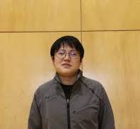
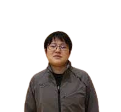
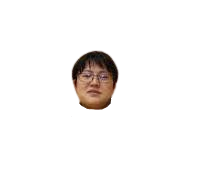
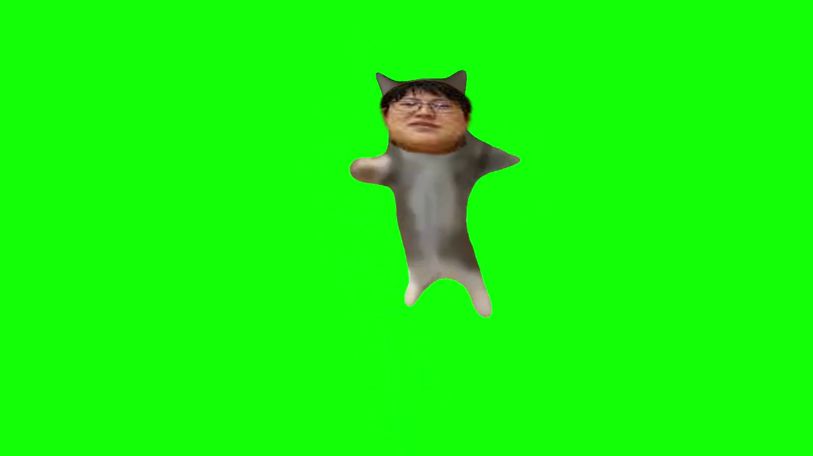

かわいい?
何で作った
なんでってそりゃ、作れそうだったからですよ。(すっとぼけ)
それはさておき、なにで作ったかを下に載せてゆきます。
キルレ順です。
・動画背景切り抜きツール（二次元素材用）
アニメキャラの動画切り抜き作業を楽にしたいアニメからキャラだけを抜き出すツールです。
神ツールです。ありがとうございます。
今回、このツールを応用して使ってみました。
まず、ハッピー猫.mp4からフレーム単位の画像を切り出す作業
で、出来上がったフレーム単位のハッピー横沢.pngをまとめて、ハッピー和樹.mp4(正確には.aviでした。どうでもいいですか?)へと昇格させる作業
このダブルめんどいワークを快くこなしてくれました。
きっとこのツールの作者さんもご満悦でしょう。
・MediBangPaint
MediBang Paint for Proお絵かきソフトです。
でも今回は、背景除去と、画像の自由変形でしか使っていません。
いやあ、使ったことないですけど、背景除去とか画像変形とかできることに加えて、お絵かきもできるとか、素晴らしいですね。
お絵かきとかうまいこと使える人は使ってみてあげてください。うまく使えたことないんで。
作業といった作業はここしかしていませんね。
自動化できていたらどれだけ楽で、精巧な横沢先生ができていたことでしょうねえ～
・removebg
remove.bg画像の背景除去サイトです。
横沢先生を虚空へと引きずり込みました。
かなり自然に切り取れました。ご秀麗であられる…この姿を目に焼き付けておいてください。
まあジャケットは剥いでくれませんでした。残念。
・aviutl
AviUtlのお部屋動画編集ソフトです。
といっても、今回はほぼ使っていません。今回のものは画像繋げるだけでしたから。
一応、最後にハッピー和樹を.aviから.mp4に変換したくらいです
あと、フレーム単位で猫と横沢先生を合体させるアイデアはaviutlを見ていたから思いついたのかもしれません。
そんなもんですよ。今回編集してないんですよ。
横沢先生弄んだったww
横沢先生の画像を4枚用意しました。
どれも、横沢先生の画像を加工したものです。
|  |
ネットに載ってるやつ |
|  |
removebgで背景除去したやつ |
|  |
medibangpaintで裸にしたやつ |
|  |
猫を乗っ取ったやつ |